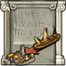

loading ...
Points gained {{scoreboardDateInfo}}

{{noPlayerData ? 'No scoreboard found' : 'No scoreboard found for that date'}}
Sorry. {{noticePlayer}}
No scoreboard found
Sorry. {{noticeAlliance}}
This scoreboard currently shows points gained {{scoreboardDateInfo}}. {{nextUpdate}}
There can be delays of up to 2 hours between when the points were actually gained and when they show up on this scoreboard. This is due to the way that Grepolis publishes this data. We check every 10 minutes if there is new data available, but the delay is on the Grepolis side and we can not do anything about it. Furthermore, the data endpoints made by Grepolis are extremely unreliable. Sometimes they are updated within minutes and sometimes it takes more then an hour. We have even seen occasions where the data was 'updated' but in fact the 'new' data was older then the previously published data.
Our scoreboards are reset at 02:00 AM every night. The reason we do not reset exactly at midnight is due to the data processing delay we explained in the previous section. By resetting at 2 AM, the probability of showing the correct daily totals is increased. Due to the night bonus on many worlds, there are usually not many points gained between 00:00 and 02:00 AM; this means that our risk of counting too many points is very low whereas our risk of counting too few points would be very high if we were to reset at midnight. That being said, please understand that this scoreboard can never be 100% accurate.
GrepoData City Indexer Team admins and owners can publish their indexed siege reports. They can also unpublish the report if they change their mind. We do not make any City Indexer data public without the explicit opt-in concent of the respective team admins. If you want to use this feature, please create a City Indexer account, create a city indexer team and start using the userscript. If you or your teammates index conquest reports, you will have the option to publish the respective siege overview to this scoreboard. If you publish a siege, all GrepoData users will be able to see your siege overview. The individual conquest attacks remain hidden and are only visible to you and your team.
The world map shows island domination per alliance. An island is counted towards an alliance if that alliance owns the most cities on that island. This includes both islands with and without farm villages. While this map can serve as an approximation of world domination, the percentages on the right are not the same as the domination end-game percentages.
Admittedly, the world map on this scoreboard is a bit outdated and not very useful. It was meant to show on a high level which alliances are fighting eachother. We have received many requests to make a better map tool; and while we may do this in the future, we currently have no concrete plans to do so.
Thank you for using GrepoData! If you have any questions or remarks, feel free to contact us.